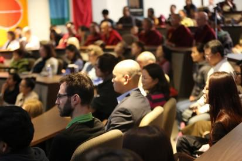

加拿大约克大学问答
『2014年10月24日』
主持人：
感谢堪布亲切而透彻的演讲，让我们对于“心性”这个十分难以理解的主题，有了新的认识。
下面是答疑时间，提问者请站到中间的过道，那里有麦克风供您使用，请排好队，耐心等候。
（一）问：能否说灵魂是“我”？
答：“灵魂”就是心识。
在没有细致观察时，暂时可以说心识是“我”，这颗心识今生是人，下一世变成动物，再下一世又成为人，不断流转；但如果用佛教的空性智慧分析时，心识也不存在，所以不可能是“我”。
也就是说，暂时的显现中，身体和心识存在；进行观察时，身体不存在而心识存在；再深入观察时，二者都不存在。
一旦认识到心识了不可得——并非理论的了知，而是真实的证悟，就会获得圣者的果位，成为菩萨或者佛，再也不会流转。
（二）问：禅修能否帮我们抉择人生方向？比如从事什么职业、树立什么目标……
答：这要看你的禅修境界——如果境界很高，可能不仅人生的大问题，甚至前方是否堵车之类的小事，也能看得一清二楚；如果境界不很高，那么要通过禅修来规划人生，有一定困难。
如果是后一种情形，可以运用智慧选择人生路，之后不断祈祷来促成愿望实现。如果有信仰，可以祈祷佛菩萨，或者做一些善事，这些对实现心愿都有帮助。
总之，达到很高禅定境界的人，对于生活中的简单问题完全能轻松解决，自然能观照更长远、更隐蔽的事，乃至抉择人生大事。但这对禅定境界不高的人，是不太可能的。

（三）问：如何跟关系不好的人相处？
答：关键是保持一颗慈悲、包容的心，这样不论别人如何伤害自己，都不会生起怨恨，能够与之和睦相处。诺贝尔和平奖获得者马拉拉也说：我甚至不怨恨想要杀害我的人，这是我从耶稣和佛陀等先知身上学到的慈悲。
反过来说，如果没有慈悲与包容心，那么即使别人对自己很好，自己也可能经常对对方心怀嗔恨。
（四）问：我禅修时会观想一个太阳，以此让思绪不被打扰，这样可以吗？
答：这样虽然能暂时压制烦恼，但并不究竟，就像吃止痛片临时止痛一样。要从根本上解决问题，还是要认识心的本性。
（五）问：我目前的禅修，只能断断续续地专注，该如何提升呢？
答：禅修时，入定时间越长越好，但是如果出现散乱、昏沉，就会无法继续。所以要提升禅定，先应寻找一处寂静的环境，之后坚持不懈地修持。当然，刚开始每一座短一点也可以，随后慢慢不断加长。总之，长期下功夫是唯一的办法。
（六）问：佛教中讲贪嗔痴是痛苦之源，但是像乔布斯对事业也有贪心，那么贪心到底是社会发展的动力还是阻碍呢？
答：佛教确实说贪心等是痛苦之源，不过佛教也说正当的希求是需要的，比如对事业的正常追求，这并不是很严重的贪心。
贪心是一种过度的染著、吸引的心态；而嗔心则是一种过度的排斥、厌恶的心态。本来不好的东西，你认为非常好，从而贪执；本来不用弃舍的东西，你拼命抗拒，从而嗔恨。这些心态都不符合对境的真相，会给生活带来负面影响，因此佛教会进行遮止。不过，佛教并不否定人们对生活的适当追求。
（七）问：心的本性是一种明清的觉知吗？
答：心的本性是明空无二的——一方面是空性，另一方面还有明明清清、不可思议的一种光明，空性与光明无二无别。这种境界需要依靠窍诀性的实修才能现前，语言是很难真实描述的。
（八）问：有没有可能用寂止的方式修持空性？
答：有些人也可以。
（九）问：在生活中遇到不顺心的事时，我常常会发脾气，此时如何用最简单的方法对治？
答：面对不顺心的境遇，很多人会禁不住发火，此时最好让心暂时平静一下，像大树一样安住两三分钟，这样烦恼就会有所减弱，不那样猛烈。尤其如果想辱骂别人时，不要马上口出恶言，先冷静三分钟，之后再有所行为，这样本来的恶口也许就不会成功了。
所以，暂时安住是对治烦恼最简单的一种方法。
（十）问：我是多伦多大学的学生，这里的每个学生都面临分数的压力，您觉得有办法解决这种问题吗？
答：不仅是你们学校，现在全世界的学校基本都是分数至上，不培养学生的心灵，只培养学生的分数。
实际上，学校教育中，一方面要关注学生的分数，但同时也要注重培养他们的慈悲心等品质。如果能树立这样的教学理念，分数压力的问题就会得到缓解。你是一名学生，那么可以请求老师多传授慈悲心方面的教言，或者给校长写封信提个建议，可能问题会有所解决。
（十一）问：如果想达到较高的禅定境界，是不是必须变成佛教徒？
答：要达到很高的禅定境界，一定要借助佛教的方法，尤其胜观的智慧。
目前东西方的很多学校和寺院常常举办禅修活动，但大多只是比较简单地调节一下心态，平衡一下心理，这对缓解烦恼有暂时的作用，从这个角度而言有其必要性，不过要想长期保持寂静的心态，就需要让禅修不断深入，而这方面一定要借助佛教的方法。
虽然是这样，也并不要求禅修者非要成为佛教徒不可。即使没有佛教信仰，也完全可以使用佛教的方法。
（十二）问：在修心过程中，我经常发现自己积习难改，从而很泄气，这时该怎么办？
答：一名学生要完成学业，会经历种种不顺；一位企业家要创办企业，也会遭遇很多坎坷；同样，修行的道路，也并非一帆风顺，可能会有很多磨难。
不仅是我们，即使一些高僧大德，比如顶果钦哲仁波切，也是历经十多年的不懈努力，克服了很多困难，最后才获得成就的。
所以，通向目的地的路上出现曲折，是一种自然规律。
当然，你能认识到自己的不足，这很好，但是不能放弃努力。如果一直坚持走下去，即使有时对自己有些失望，但是只要不断往前走，为了实现目标而创造各方面的顺缘，那么到了一定时候，修行的路自然会顺利，会有所收获的。
所以，不断努力是最关键的。
主持人：
我们会不断努力，应对这个时代给我们的挑战。再次感谢堪布不远万里，从中国来到加拿大跟我们分享他的智慧！